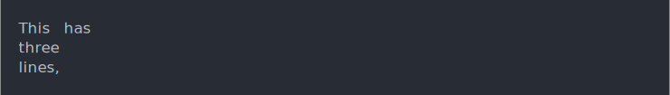

| cli_verbatim {cli} | R Documentation |
It is not wrapped, but printed as is. Long lines will overflow. No glue substitution is performed on verbatim text.
cli_verbatim(..., .envir = parent.frame())
... |
The text to show, in character vectors. Each element is printed on a new line. |
.envir |
Environment to evaluate the glue expressions in. |
cli_verbatim("This has\nthree\nlines,")

No glue substitution happens here.
cli_verbatim("No string {interpolation} or {.emph styling} here")
cli_code() for printing R or other source code.